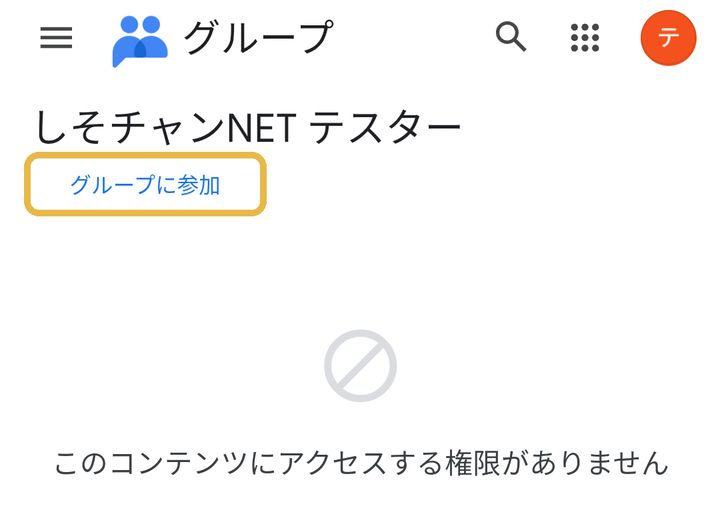
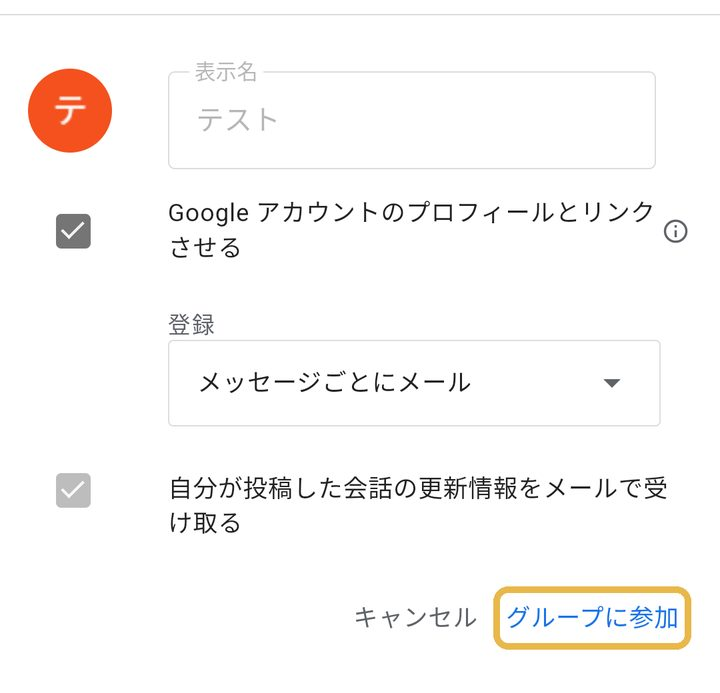
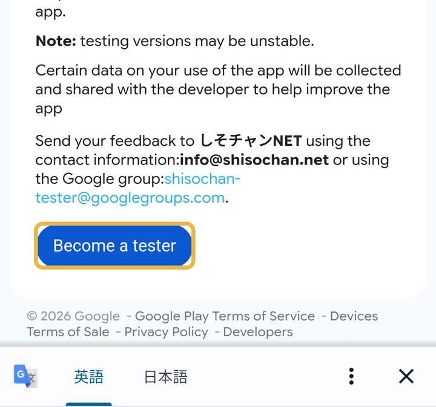
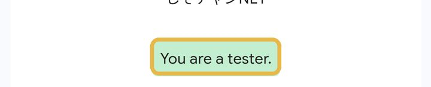

上から順に、3つの手順で参加できます。
まずは、ボタンを1回押して仲間に入ってください。
このテストはAndroid のスマホだけが対象です。
お気持ちだけ、ありがとうございます。
Instagram などのアプリの中で開いています。Chrome で開き直してください。
Chrome で開き直す開かないときは、右上の ︙ を押し、Chrome で開く を押します。
①〜③は、同じアカウントで進めてください。
1. 左上を押す
開いた画面の左上のグループに参加 を押します。

2. もう一度押す
出てきた窓の右下のグループに参加 を、もう一度押します。

このページに戻ってきます。
グループに入るときに使ったGmail に届きます。
届いたメールのボタンを押すだけで、続きができます。
英語の画面が開きます。青い Become a tester（テスターになる）を押します。

「You are a tester.」（あなたはテスターです）と出たら完了です。

このページに戻ってきます。
Play ストアが開いたら、インストール を押します。
14日間、アプリを消さずに置いておいてください。
ときどき開いて番組を見ていただけると助かります。
グループから、お知らせのメールが届くことがあります。
しそチャンNET ／ 運営：EDIT ROOM（山内 一輝）
お問い合わせ：info@shisochan.net